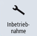
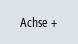

Im Bedienbereich "Inbetriebnahme" greifen Sie über die Bedienoberfläche auf folgende Settingdaten zu.
Vorgehensweise
|  | 1. | Wählen Sie den Bedienbereich "Inbetriebnahme" an. |
| | 2. | Drücken Sie den Softkey "Masch.daten". |
 | 3. | Drücken Sie die Menüfortschalt-Taste. Die Softkeys "Allgemeine SD", "Kanal SD" und "Achs SD" werden eingeblendet. |
| | 4. | Drücken Sie den entsprechenden Softkey, um den gewünschten Bereich der Settingdaten anzuzeigen. Das Fenster wird geöffnet und die angewählten Settingdaten werden angezeigt. |
| | 5. | Stellen Sie den Cursor auf das gewünschte Settingdatum und positionieren Sie den Cursor auf den zu ändernden Eintrag. Geben Sie den gewünschten Wert ein. |
| | 6. | Je nach Aktivierungsart haben Sie zwei Möglichkeiten, um die Einstellungen wirksam zu setzen: |
 | | Drücken Sie den Softkey "MD wirksam setzen (cf)". |
| | | - ODER - |
 | | Drücken Sie den Softkey "Reset (po)". Sie erhalten eine Sicherheitsabfrage. |
 | 7. | Drücken Sie den Softkey "OK", um einen Warmstart durchzuführen. |
| | | - ODER - |
 | | Drücken Sie den Softkey "Abbruch", wenn Sie die Einstellungen nicht übernehmen möchten. |
Achs- /Kanalauswahl
Sind mehrere Komponenten für den angewählten Bereich vorhanden (z. B. "Achs SD" bzw. "Kanal SD"), so haben Sie folgende Auswahlmöglichkeiten::
  | 1. | Drücken Sie den Softkey "Achse +" oder "Achse -" bzw. "Kanal +" oder "Kanal -". Es werden die Werte der nächsten (+) bzw. vorherigen Achse/ Kanal (-) angezeigt. |
| | | - ODER - |
| | | Drücken Sie den Softkey "Direktanwahl". Das Fenster "Direktanwahl" wird geöffnet. |
| | 2. | Wählen Sie über die Auswahlliste die gewünschte Achse aus den verfügbaren Achsen direkt aus. |
| | 3. | Drücken Sie den Softkey "OK" um die Einstellung zu speichern. |
| | | - ODER - |
| | | Drücken Sie den Softkey "Abbrechen" um die Einstellung zu verwerfen. |